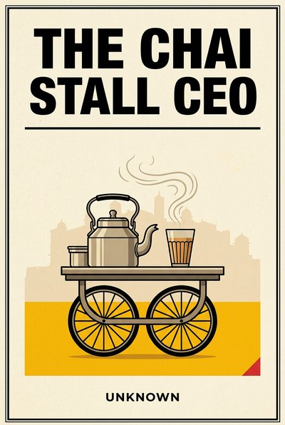

Library › Business & Startups
The Chai Stall CEO — Summary & Key Lessons

Ten lessons from the three-foot counter that runs on forty cups a day and never misses payroll.
📖 OPEN THE FULL INTERACTIVE BREAKDOWN →🌐 Read it in Hindi, Hinglish, Gujarati, Tamil & 22 more languages — free, with audio.
💡 The Big Idea
The chai stall is India's most honest business school. Rent is a corner, not a shop. Inventory is bought at dawn and gone by dusk, so nothing sleeps on a shelf pretending to be profit. Every customer is known by name and by how they take their cup, which is loyalty engineering that predates the word. There are no receivables, no decks and no growth that is not paid for in the day's own cash. This book distills that doctrine into ten lessons for any business at any size: the stall is not a smaller version of a company, it is a purer one. The examples inside are drawn from the public record of Indian and global business, from sachet pricing to rapid-turn retail, always read the way the counter reads them.
🧠 The 10 Key Lessons
Lesson 1: Rent the Corner, Not the Shop
Chapter 1: The Three-Foot Lease
The stall's first discipline is that it buys location, not real estate. A corner with footfall beats a shop with rent, because fixed cost is the only cost that charges you while you sleep. Every rupee of fixed overhead is a promise to pay tomorrow whether or not tomorrow buys a cup. The counter treats fixed cost as the enemy and visibility as the asset, and gets both from the same three feet of pavement.
📖 Example: The public record keeps proving the stall right: startups that signed ambitious offices died of the lease while their product was still a guess, while giants like DMart grew for decades on cheap land bought early, the one fixed cost that was itself the strategy. Read the full example →
⚡ Do this: List your fixed costs in order of size. Cut the largest by a fifth this month, or convert it to a variable one tied to revenue, and put the difference where demand can see it.
Lesson 2: The Free Refill Is the Moat
Chapter 2: The Regulars
The stall does not advertise, because the stall remembers. It knows two hundred names, two hundred sugar levels, and who takes the extra ginger on Mondays. That memory is a moat no chain can buy quickly, because it compounds in person, one conversation at a time. Modern service empires were built on exactly this insight, systematized.
📖 Example: Zappos built a billion-dollar shoe business on service conversations that had no sales script, and the best street-side stalls in Mumbai run the same play with a kettle: recognition first, transaction second, and the customer returns to a place where being known is the product. Read the full example →
⚡ Do this: Pick your twenty most valuable customers and learn one true thing about each that has nothing to do with what they buy. Use it this week.
Lesson 3: Cash Today Beats Credit Tomorrow
Chapter 3: No Receivables
The stall sells for cash, always, and that single rule is why it survives the seasons that kill larger firms. A receivable is a hope with paperwork, and paper hope has buried companies a hundred times its size. The stall's discipline is not that it never extends trust, it is that trust is given in cups, daily, in small measured amounts that can never sink the counter.
📖 Example: Subhiksha, once one of India's fastest-growing retail chains, collapsed partly on working capital that never came home, while the pavement vendor who extends one chai on credit to a known face loses at most ten rupees on a bet placed with full information. Read the full example →
⚡ Do this: Compute your receivable days today. Set a target to cut them by a third, and make your largest extension of credit smaller, not larger, this quarter.
Lesson 4: One Page, One Product, Done Perfectly
Chapter 4: The One-Page Menu
The stall sells chai. Perhaps three variations of chai. The menu is one page because mastery is one page deep, and every extra item dilutes the one thing people cross the road for. Focus is not a limitation of the small; it is the engine of the small, and most large businesses are small businesses that forgot this and got big anyway before getting gone.
📖 Example: In-N-Out kept a menu a toddler could recite while burger empires bloated and shrank around it, and the street's own proof is that the stall's cutting chai outsells every ambitious food item it ever briefly tried and quietly killed. Read the full example →
⚡ Do this: Rank your products by profit and by pride. Kill or shrink the bottom fifth of the list this month, and reinvest the freed hours in the single item you would defend with your name.
Lesson 5: The 5 AM Shift Is the Strategy
Chapter 5: Where Demand Lives in Time
The stall opens when demand peaks, not when it is convenient. The 5 AM shift catches the milk van, the morning cold and the first commuters, because timing is a strategy that costs nothing and a wrong one that costs everything. Most businesses fight for share of market; the counter first fights for share of hour.
📖 Example: The dabbawalas built an empire on the 11:20 local because the trains set the clock, and modern retail's fresh-supply chains are the same insight industrialized: be packed and priced before the demand wave lands, because the wave does not wait. Read the full example →
⚡ Do this: Chart your demand across a day and a week. Move your best effort onto the peak, and stop spending prime energy on hours that never buy anything.
Lesson 6: Hire Hands, Train Hearts
Chapter 6: The Boy Who Learns the Machine
Street businesses run on teenage hands and get loyalty most boards would envy, because the training is total: the boy who starts with cups ends up knowing supply, credit, pricing and every regular's name. The stall cannot afford churn, so it grows people, and the ones it grows can run the counter blind. That is not charity, it is continuity engineering.
📖 Example: McDonald's turned the same insight into Hamburger University and a promotion pipeline that produced executives from fryers, and India's own large kirana-to-chain stories keep repeating it: the counter boy who learned everything became the operator who ran everything. Read the full example →
⚡ Do this: Choose your most junior person and teach them one piece of your job this month that nobody else, including you, has written down.
Lesson 7: Price to the Pocket, Not the Competitor
Chapter 7: The Rupee Ladder
The stall prices to what the pocket carries at that hour: full cup for the commuter, half for the schoolkid, festival premium everyone accepts because it came with a better leaf cup. Competitor pricing is a rumour; pocket pricing is a fact. The sachet revolution proved the street's rule industrially: shrink the pack, unlock the wallet.
📖 Example: CavinKare built a giant on five-rupee sachets when shampoo was a luxury bottle, proving the pocket priced the market, and the street knew it first: the half-cup was the sachet before the sachet existed. Read the full example →
⚡ Do this: Add one smaller, cheaper pack or tier of what you sell, priced for the customer who wants in but cannot or will not pay full. Measure what it does to total revenue, not just to pride.
Lesson 8: Rainy-Day Tin
Chapter 8: The Tin on the Shelf
The stall keeps one month of cost in a tin and does not call it profit, does not spend it on a second stove, does not count it in the evening's pride. The tin is the business's opinion about the future: it will rain, the road will get dug up, the municipal van will come. Every collapsed empire kept a spreadsheet where the tin should have been.
📖 Example: PMC Bank's depositors learned the difference between recorded safety and kept safety, while the stall's unaudited tin remains the most honest balance sheet on the street: one month of survival, cash, visible, untouchable. Read the full example →
⚡ Do this: Open a separate account or envelope today equal to one month of your fixed costs. Name it after the worst month you survived. Do not move it for a year.
Lesson 9: The Stall Is the Ad
Chapter 9: The First Three Seconds
The counter spends nothing on marketing because the counter is the marketing: steam in the right light, clean glasses stacked in view, the kettle's sound at commute hour. Its storefront is theater working every shift, and its first three seconds sell before the price list can. Most businesses pay agencies to reconstruct what a well-run stall simply is.
📖 Example: The tea brand that grew on tapri aesthetics and the snack brands that fought for the visible top shelf of the kirana both monetized the street's oldest law: being seen brewing beats being heard claiming. Read the full example →
⚡ Do this: Stand where a stranger first meets your business, physically or on a screen. Give yourself three seconds. Fix the first thing that looks dead, dirty or confusing, today.
Lesson 10: Grow by Second Stall, Not by Empire
Chapter 10: The Second Stall
When the counter overflows, the stall opens a second stall two crossings away, run by the boy who learned the machine, selling the same one page to the same kind of corner. It replicates a proven cell; it does not diversify into dosa. The discipline is the copy, and the copy is only as good as the system written down before the second kettle boils.
📖 Example: Bikanervala and the bhujia dynasties grew stall-to-empire on replicated recipes and family-run units, and the street's cautionary tales are the stalls that franchised a dream instead of a system and watched both die in a season. Read the full example →
⚡ Do this: Before you add any second of anything, write the one-page SOP of your first. If it does not fit one page, it is not yet a system; it is just you being busy.
✅ 5-Step Action Plan
- Cut your largest fixed cost by a fifth or convert it to variable this month.
- Learn one true personal fact about your twenty best customers and use it.
- Cut receivable days by a third; shrink your biggest credit bet.
- Kill the bottom fifth of your product list and reinvest in your flagship.
- Build a one-month fixed-cost tin and leave it untouched for a year.
⚠️ When This Doesn't Work
This is a TheSmallBook Original: written in-house, published under the name Unknown, with no real author to credit. The doctrine is original, but the examples are real public business history (Zappos, DMart, Subhiksha, CavinKare, Bikanervala, PMC Bank) cited honestly from the record. Nothing here is financial advice; it is a way of seeing, borrowed from a counter that never went to business school and never needed to.
💀 The Graveyard Proves It
☕ V.G. Siddhartha — The Coffee King Who Carried It Alone. Burn: A founder India mourned. Read the full case study →
💬 Best Quotes from The Chai Stall CEO
- “The street does not fund hope. It funds today's forty cups, and hope can wait.”
- “A regular is worth more than a crowd, because a crowd is weather and a regular is climate.”
- “Grow a second stall, not an empire. Empires fall from the top; stalls just open earlier.”
Interactive version: mark lessons as read, listen in your language, share quote cards.